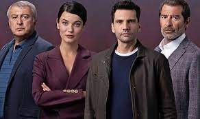

Marya ELAŞTAR
Merhaba ben Marya! Ankara'da ikamet ediyorum . Bilimkurgu izlemeyi ve okumayı çok seviyorum .
Tam bir Star Trek hayranıyım ! Web geliştirme ile ilgileniyorum . Kodluyoruz bu eğitim sayesinde harika
şeyler öğreniyorumve öğrenmeye devam ediyorum !
İlgili Alanlarım
- Film
- Esaretin Bedeli
- Başlangıç
- Dövüş Kulübü
- Dizi
- Yargı
- Kırmızı Oda
- Hayat Şarkısı
- Kitap
- Cinayet Alfabesi
- Neden Evans'a Sormadılar ?
- Beş Küçük Domuz
Sevdiğim diziler
Yargı : Cinayet Dizisi

Bir cinayet vakasıyla yolları kesişen Ilgaz ve Ceylin, katili bulma yolunda birlikte hareket etmek zorunda kalacak
ve bu durum ikisinin de hayatında geri dönüşsüz bir kırılma noktası yaratacaktı